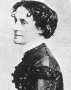

|

|

|
|
|
Born to a wealthy and prominent family in Richmond,
Virginia, Elizabeth Van Lew became one of the Union's most
valuable spies, providing military and tactical information
throughout the Civil War. Van Lew was born on October 17,
1818 to John and Elizabeth Van Lew. John Van Lew was an
important Whig leader in Richmond and his home was
frequently full of local politicians, whose presence
certainly influenced the development of Elizabeth's own
political philosophy. She was educated in Philadelphia, a
city that was a center of anti-slavery rhetoric and activism
in the ante-bellum period.
Returning to Richmond from Philadelphia, Elizabeth was
committed to abolition. When the War began, she pleaded her
loyalty to the Union, despite the obvious dangers of holding
this view in wartime Richmond. Van Lew and her mother first
helped the Union effort by assisting prisoners of war at
Libby prison--bringing them food, books and clothing.
Because John Van Lew was so prominent, Elizabeth was privy
to a great deal of military information. She devised a
variety of ways to convey that information to Union leaders.
When Richmond fell to the Union on April 2, 1865, Elizabeth
recognized the value of the documentation left behind.
Rushing to Confederate offices, she collected paperwork and
records, conveying them to Union authorities.
After the War, President Ulysses S. Grant recognized Van
Lew's contribution to the Union effort by appointing her
postmistress for Richmond. Elizabeth lost her appointment in
1877 when Rutherford B. Hayes became President, but regained
it under Grover Cleveland. By the 1880's, however,
Elizabeth's life in Richmond had become sad and lonely. Her
mother dead, Elizabeth had few friends among the local
population. Although her aid to the Union had been of great
use, few citizens of Richmond approved of her activities. In
addition, she had incurred large debts during and after the
war, and had no way to repay them or to support herself.
Elizabeth was rescued by the family of one of the Union
soldiers she had assisted at Libby prison. Relatives of
Colonel Paul Revere repaid her kindness and generosity by
supporting her financially for the rest of her life. In the
1870s, Van Lew's activist nature found an outlet through her
ardent support of the women's rights movement. She died in
Richmond in 1882.
Source: Joan Waugh, ed., Facts on File Encyclopedia of American
History: Civil War and Reconstruction, 1856 to 1869 (New York: Facts on
File, 2003), 378.
|